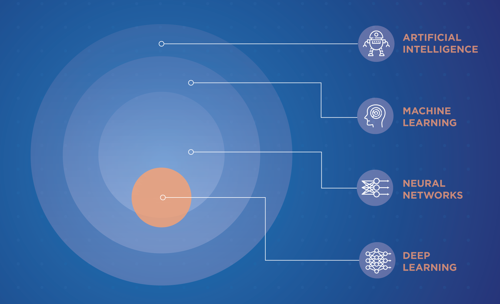
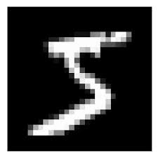

name: title class: center, middle, inverse # Artificial Intelligence and Machine Learning --- name: agenda .left-column[ ## Agenda ] .right-column[ 1. [Introduction](#introduction) 1. [Intelligence](#) 1. [Artificial Intelligence](#) 1. [History](#) 1. [What makes a machine intelligent?](#) 1. [Why now?](#) 1. [Traditional Programming vs AI](#) 1. [N-Queen Problem](#) 1. [Machine Learning](#) 1. [SuperVised Learning](#) 1. [Unsupervised Learning](#) 1. [Tools & Frameworks](#) ] --- name: introduction .left-column[ ### Introduction ] .right-column[ ## Mehedi Imam Shafi ] .designation[ Software Engineer Progoti Systems Ltd, SureCash <div> <h4>Contact</h4> <ul> <li><a href="mailto:mehedishafi@hotmail.com">mehedishafi@hotmail.com</a></li> <li><a href="mailto:mehedishafi@surecash.net">mehedishafi@surecash.net</a></li> </ul> </div> ] .footnote-small[[mehedi-shafi.github.io](https://mehedi-shafi.github.io)] --- name: intelligence class: center,middle ## Intelligence --- name: intelligence-2 class: center,middle "Intelligence is the aggregate or global capacity of the _individual_ to __act purposefully__, to __think rationally__ and to __deal effectively__ with his environment" .quoted-by[ \- Wechsler, 1944, ] --- name: artificial-intelligence class: center,middle ### Artificial Intelligence --- name: artificial-intelligence-2 class: center,middle ### Or, This <img src="assets/terminator.jpg" width="600" height="500" /> --- name: artificial-intelligence-3 class: center,middle ### Now, we have this. --- name: artificial-intelligence-4 class: center,middle ### And this. --- name: history class: center,middle ### History of Artificial Intelligence --- name: history-1 class: center,middle ### World War II and Enigma --- name: history-3 .left-column[ History ] .right-column-append[ - Ferranti Mark 1 - 1951 ] --- name: history-4 template: history-3 .right-column-append[ - Logic Theorist - 1955 ] --- name: history-5 template: history-4 .right-column-append[ - Birth of the Field - 1956 ] --- name: history-6 template: history-5 .right-column-append[ - "Machine Learning" - 1959 ] .footnote-small[ [Short History](https://www.forbes.com/sites/gilpress/2016/12/30/a-very-short-history-of-artificial-intelligence-ai/?sh=7a1590366fba) [History of AI](https://en.wikipedia.org/wiki/History_of_artificial_intelligence) ] --- name: what-makes-a-machine-intelligent class: center,middle ### What makes a machine intelligent? --- name: turing-test class: center,middle ### The Turing Test --- name: turing-test-2 template: turing-test .footnote-small[ [Source](https://www.ijc.ro/editorial/why-the-turing-test-is-not-suited-for-testing-artificial-intelligence/) ] --- name: why-ai class: center,middle ### Why we need AI? --- name: n-queen class: center,middle ## N-Queen .footnote-small[[Eight Queen Puzzle](https://en.wikipedia.org/wiki/Eight_queens_puzzle)] --- name: n-queen-2 .left-column[ #### N-Queen ] .right-column[ #### Problem Statement "The eight queens puzzle is the problem of placing eight chess queens on an 8×8 chessboard so that no two queens threaten each other" ] --- name: n-queen-greedy .left-column[ #### N-Queen ] .right-column[ ### Solution by BackTracking #### Complexity _O(n!)_ - 8 Queens: 40320 - 9 Queens: 362880 - ... - 15 Queens: 1.3 x 10<sup>12</sup> ] --- name: n-queen-genetic-algorithm .left-column[ #### N-Queen ] .right-column[ ### Solution by Genetic-Algorithm * Generates and keep only the best solution. * Learns to create better generations over time. * With a very good fitness function calculation, can be brought lower. ] --- name: machine-learning class: middle,center ### Machine Learning --- name: ai-and-machine-learning ### AI and Machine Learning  --- name: machine-learning class: center, middle ### Table: Hours of study per week against score <div class="center-div"> <table class="tg"> <thead> <tr> <th class="tg-0pky">Hours Studied</th> <th class="tg-0pky">Result</th> </tr> </thead> <tbody> <tr> <td class="tg-0pky">10</td> <td class="tg-0pky">A<br></td> </tr> <tr> <td class="tg-0pky">15</td> <td class="tg-0pky">A+</td> </tr> <tr> <td class="tg-0pky">13</td> <td class="tg-0pky">A+</td> </tr> <tr> <td class="tg-0pky">11</td> <td class="tg-0pky">A</td> </tr> <tr> <td class="tg-0pky">6</td> <td class="tg-0pky">A-</td> </tr> <tr> <td class="tg-0pky">5</td> <td class="tg-0pky">B+</td> </tr> <tr> <td class="tg-0pky">7</td> <td class="tg-0pky">A-</td> </tr> <tr> <td class="tg-0pky">8</td> <td class="tg-0pky">?</td> </tr> </tbody> </table> </div> --- name: machine-learning-2 class: center,middle ### Table: ... score <div class="center-div"> <table class="tg"> <thead> <tr> <th class="tg-0pky">hours_studied</th> <th class="tg-0lax">result_in_c</th> <th class="tg-0pky">result</th> </tr> </thead> <tbody> <tr> <td class="tg-0pky">10</td> <td class="tg-0lax">A+</td> <td class="tg-0pky">A<br></td> </tr> <tr> <td class="tg-0pky">15</td> <td class="tg-0lax">A+</td> <td class="tg-0pky">A+</td> </tr> <tr> <td class="tg-0pky">13</td> <td class="tg-0lax">A+</td> <td class="tg-0pky">A+</td> </tr> <tr> <td class="tg-0pky">11</td> <td class="tg-0lax">A+</td> <td class="tg-0pky">A</td> </tr> <tr> <td class="tg-0pky">6</td> <td class="tg-0lax">B</td> <td class="tg-0pky">A-</td> </tr> <tr> <td class="tg-0pky">5</td> <td class="tg-0lax">A-</td> <td class="tg-0pky">B+</td> </tr> <tr> <td class="tg-0pky">7</td> <td class="tg-0lax">C</td> <td class="tg-0pky">A-</td> </tr> <tr> <td class="tg-0pky">8</td> <td class="tg-0lax">A+</td> <td class="tg-0pky">?</td> </tr> </tbody> </table> </div> --- name: machine-learning-3 class: center,middle ### Table: ... score <div class="center-div"> <table class="tg"> <thead> <tr> <th class="tg-0pky">hours_studied</th> <th class="tg-0lax">result_in_c</th> <th class="tg-0lax">distance_from_home</th> <th class="tg-0pky">result</th> </tr> </thead> <tbody> <tr> <td class="tg-0pky">10</td> <td class="tg-0lax">A+</td> <td class="tg-0lax">1km</td> <td class="tg-0pky">A<br></td> </tr> <tr> <td class="tg-0pky">15</td> <td class="tg-0lax">A+</td> <td class="tg-0lax">500m</td> <td class="tg-0pky">A+</td> </tr> <tr> <td class="tg-0pky">13</td> <td class="tg-0lax">A+</td> <td class="tg-0lax">1km</td> <td class="tg-0pky">A+</td> </tr> <tr> <td class="tg-0pky">11</td> <td class="tg-0lax">A+</td> <td class="tg-0lax">3km</td> <td class="tg-0pky">A</td> </tr> <tr> <td class="tg-0pky">6</td> <td class="tg-0lax">B</td> <td class="tg-0lax">2km</td> <td class="tg-0pky">A-</td> </tr> <tr> <td class="tg-0pky">5</td> <td class="tg-0lax">A-</td> <td class="tg-0lax">8km</td> <td class="tg-0pky">B+</td> </tr> <tr> <td class="tg-0pky">7</td> <td class="tg-0lax">C</td> <td class="tg-0lax">7km</td> <td class="tg-0pky">A-</td> </tr> <tr> <td class="tg-0pky">8</td> <td class="tg-0lax">A+</td> <td class="tg-0lax">500m</td> <td class="tg-0pky">B</td> </tr> </tbody> </table> </div> --- name: cat-or-dog class: center,middle <table> <thead> <th>CAT</th> <th>DOG</th> </thead> <tr> <td> <img src="assets/cat.jpg" alt="cat.jpg" width="360" height="250" srcset="" style="float: left"> </td> <td> <img src="assets/dog.jpg" alt="dog.jpg" width="360" height="250" srcset="" style="float: right"> </td> </tr> </table> --- name: what-we-see class: center,middle <table> <thead> <th>What We See</th> <th>What the computer see</th> </thead> <tr> <td>  </td> <td> <img src="assets/mnist_5.png" alt="mnist_5.jpg" width="360" height="250" srcset="" style="float: right"> </td> </tr> </table> --- name: what-computer-see <img src="assets/mnist_5.png" /> --- name: how-to-teach-computer class: center,middle ## How to Teach a Computer --- name: learning-types class: center,middle ## Supervised Learning --- name: learning-types class: center,middle ## Unsupervised Learning --- name: deep-learning class: center,middle ### A little bit about deep learning --- name: future class: center,middle ### What Future Holds? --- name: gpt-3 class: center,middle ### GPT-3 175 billion parameters 355 years to train on V100 .footnote[ [OpenAI](https://openai.com/blog/openai-api/) ] --- name: google-trillion class: center,middle A Trillion Parameter model \- GOOGLE .footnote[ [paper: switch transformers ...](https://arxiv.org/pdf/2101.03961.pdf) ] --- name: is-future-scary class: center,middle ### Does future look scary? --- name: how-to-get-started class: center,middle ### How do I get started with learning them? --- name: frameworks .left-column[ ### Tools and frameworks > Python ] .right-column[ 1. Numpy 1. Pandas 1. Scikit-learn 1. OpenCV 1. Tensorflow 1. PyTorch 1. Keras ] --- name: questions class: middle,center # Any Question? --- name: conclusion class: middle, center, conclusion # How did I do? #### [mehedishafi@hotmail.com](mailto:mehedishafi@hotmail.com) #### https://github.com/mehedi-shafi